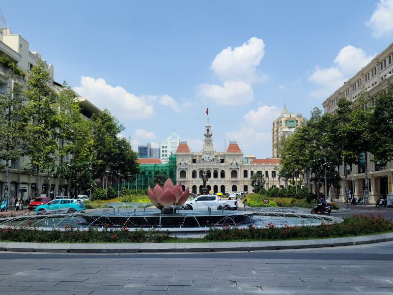
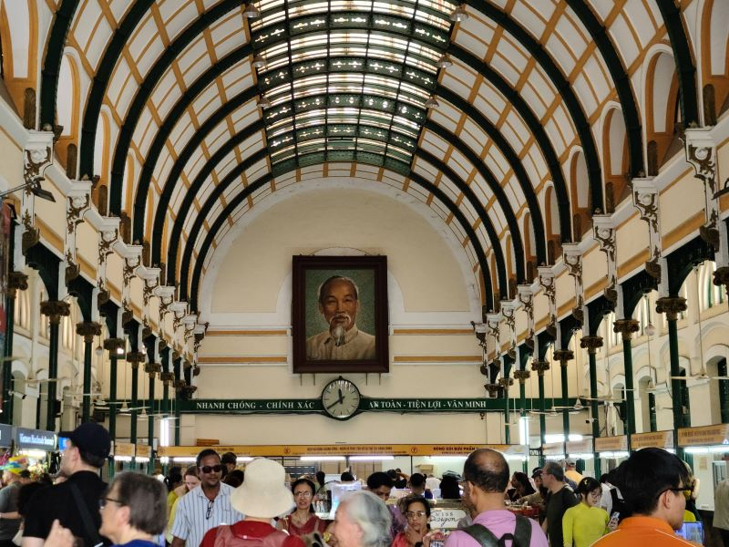
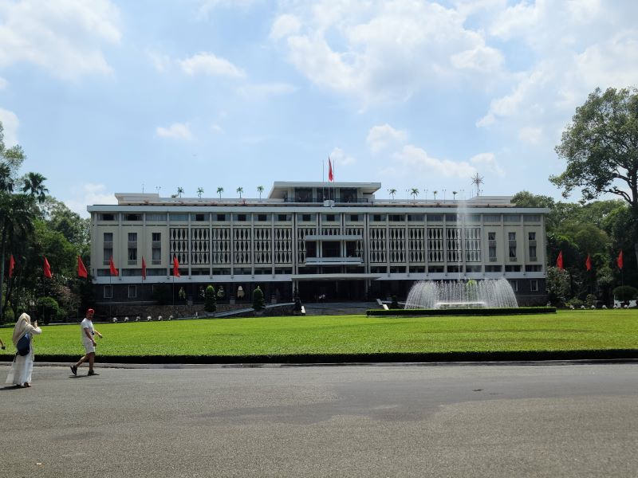

Explore Ho Chi Minh City
A Brief History
Ho Chi Minh City, formerly Saigon, developed on the Saigon River as a Khmer port before Vietnamese settlement grew in the 17th century. French colonial rule from the mid-19th century left boulevards, Notre-Dame Cathedral, and the Central Post Office. The city was the capital of South Vietnam until 1975. Markets such as Ben Thanh and tunnels at Cu Chi nearby record wartime and commercial history.
Attractions Map
Top Sights & Activities
Statue of Ho Chi Minh
A bronze monument dedicated to the founding father of modern Vietnam, standing prominently in front of the City Hall. It serves as a central focal point for civic pride and historical remembrance in the heart of the metropolis.

Nguyen Hue
A broad, bustling pedestrian promenade that stretches from City Hall to the Saigon River. It acts as the city's primary gathering space for cultural events, festivals, and daily social life, reflecting the rapid modernization of the country.

Saigon Central Post Office
A magnificent French colonial building constructed in the late 19th century, featuring a beautifully preserved vaulted interior. It remains an active post office and a testament to the city's architectural heritage and historical communications network.

Independence Palace
A important historical landmark that served as the home and workplace of the President of South Vietnam during the Vietnam War. The site is famously remembered as the location where the war officially ended in 1975 when a tank crashed through its gates.